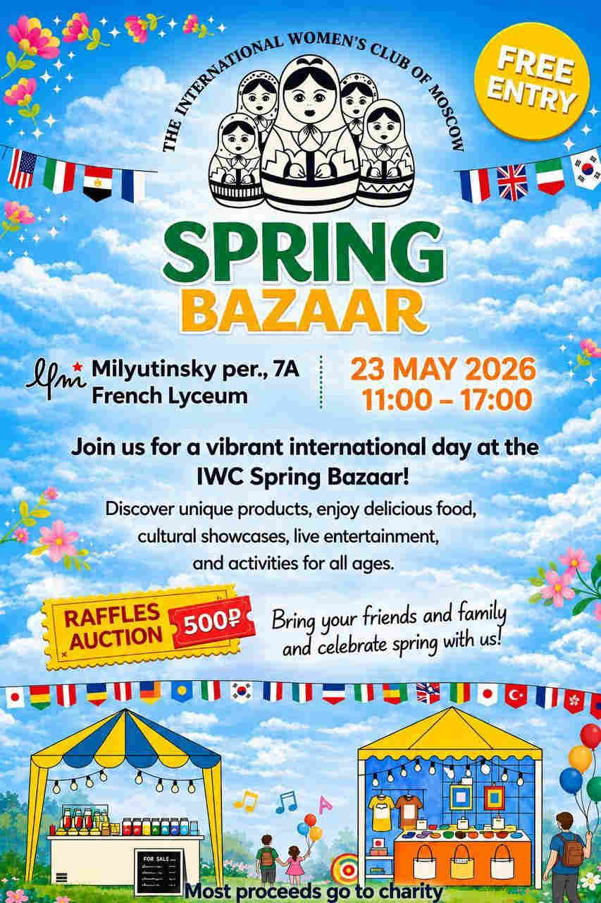
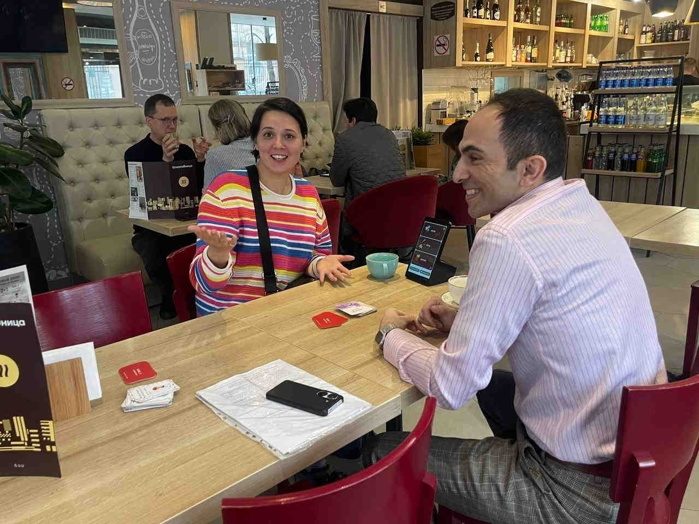
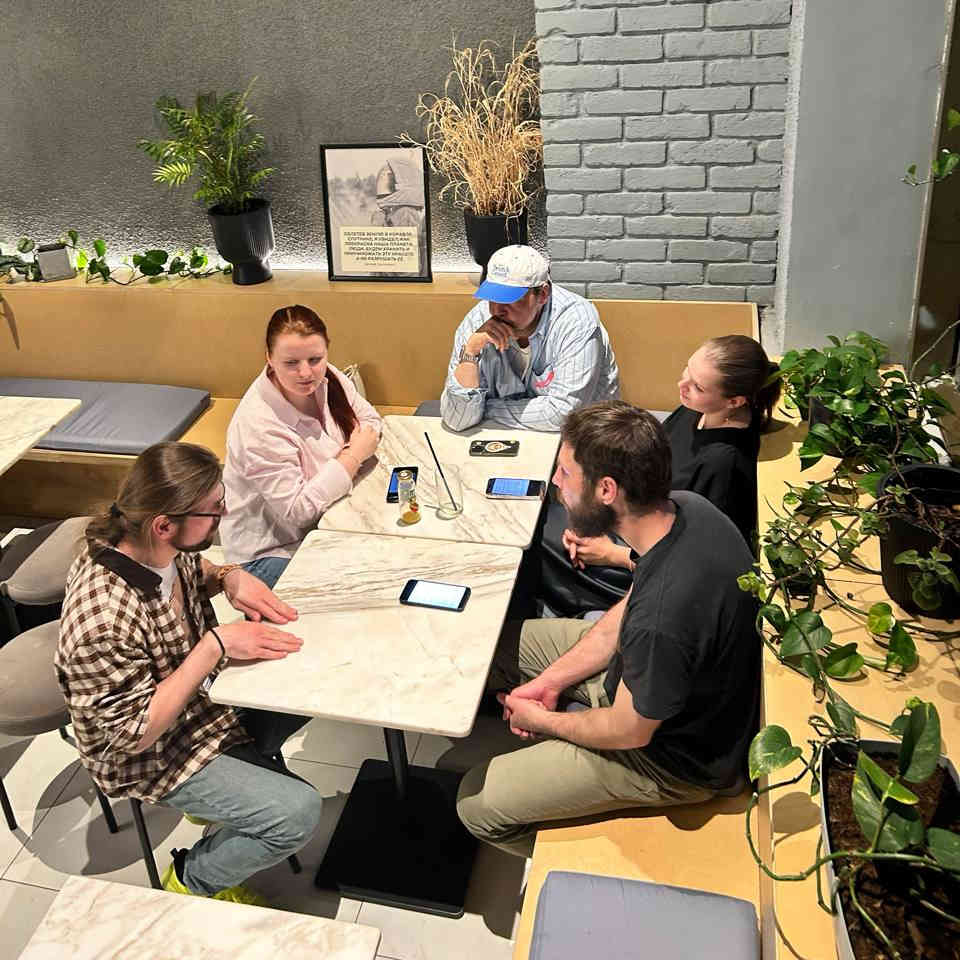
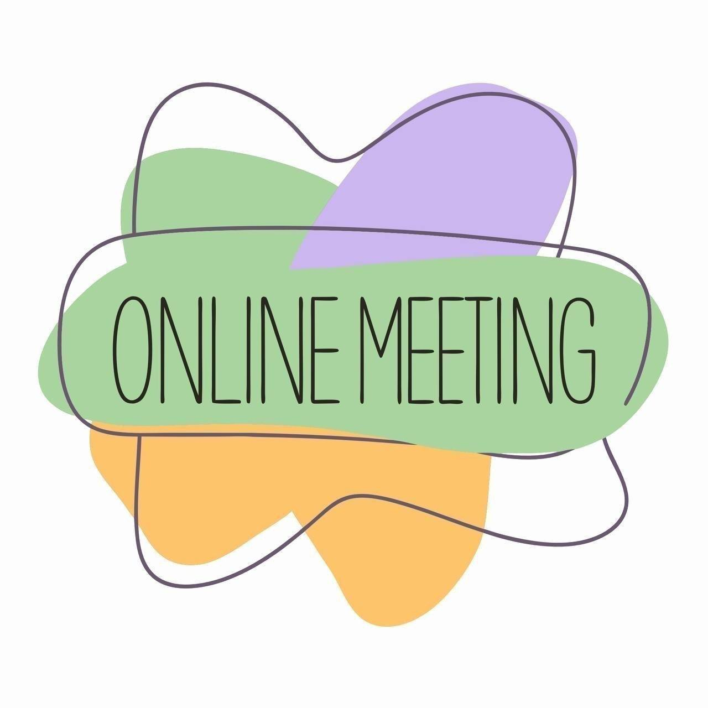
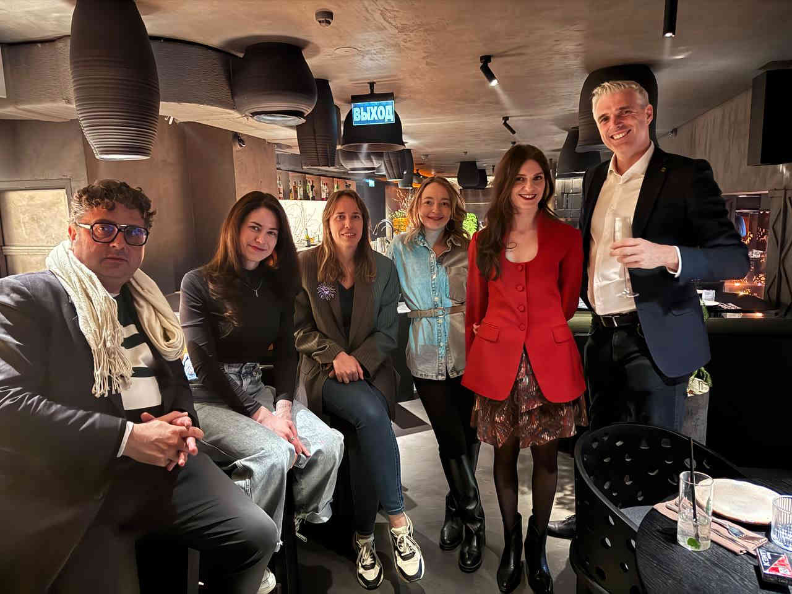

Speed Meetings
Wednesday English Meetup!
Apr 26
Yesterday’s meeting was lively and engaging, with plenty of thoughtful, interesting conversations. Welcome to everyone!

Yesterday’s meeting was lively and engaging, with plenty of thoughtful, interesting conversations. Welcome to everyone!
Is there not enough time? You can do it all at once: enjoy the game, improve your English skills, and develop your logic and charisma.

Spring is here and so is your English practice! Here is your weekly lineup of speaking clubs, game nights, and special events happening all over Moscow. Whether you are a beginner or an advanced speaker, there is something for you.
This week we have over 82 events across the city and online. Venues range from cozy coffee shops like Coffee Bean and Stars Coffee to lively bars like Katie O'Shea's and Axiom Pub. Most clubs welcome new faces — just show up and start talking!
Here is how to plan your week. Click on any club name to visit their channel for details and registration.
New recently addedTop our pick
Online
Online
Online
Online
 💬
💬 Club de Español en Moscu Casa Agave
Club de Español en Moscu Casa AgaveOnline
Online
Online
Most clubs are very beginner-friendly. Just come with a positive attitude and a willingness to chat. Here is what to expect at different types of events:
Have a great week and happy speaking!
Alright, let's get the ball rolling! We're giving away a 6-meeting subscription to Blah-Blah Club. This is a full pass for six get-togethers packed with live conversation, real English practice, and great company.
There'll be only one winner, so the suspense is real.
📋 The rules are straightforward and fair:
We haven't set a firm deadline yet. it all depends on how quickly the numbers stack up. As soon as we feel the time is right, we'll announce the closing date and pick the winner right away. So there's no point in putting it off 😉
👉 Fill in the form and enter the draw
Best of luck to everyone! May fortune favour the one who's most fired up about English! 🍀

We warmly invite you to the International Charity Bazaar organized by the International Women’s Club, of which I am also a member.
On 23 May you can enjoy a true celebration of cultures:
This free event takes place only once a year and offers a unique opportunity to experience the incredible diversity of international cultures all in one place in Moscow.
Don’t miss the chance to spend an unforgettable day with your family while supporting a good cause!
And the best part — admission is completely free! 😊
Just remember to bring some cash so you can fully enjoy the shopping and delicious treats from around the world 🌍✨
📅 When: May 23
🕒 Time: 11:00 AM - 5:00 PM
📍 Location: Milyutinsky per., 7A French Lyceum
DM for more details @Nese_M
Spring is here and so is your English practice! Here is your weekly lineup of speaking clubs, game nights, and special events happening all over Moscow. Whether you are a beginner or an advanced speaker, there is something for you.
This week we have over 83 events across the city and online. Venues range from cozy coffee shops like Coffee Bean and Stars Coffee to lively bars like Katie O'Shea's and Axiom Pub. Most clubs welcome new faces — just show up and start talking!
Here is how to plan your week. Click on any club name to visit their channel for details and registration.
New recently addedTop our pick
Online
Online
Online
Online
💬Club de Español en Moscu Casa AgaveOnline
Online
Online
Most clubs are very beginner-friendly. Just come with a positive attitude and a willingness to chat. Here is what to expect at different types of events:
Have a great week and happy speaking!
Spring is here and so is your English practice! Here is your weekly lineup of speaking clubs, game nights, and special events happening all over Moscow. Whether you are a beginner or an advanced speaker, there is something for you.
This week we have over 84 events across the city and online. Venues range from cozy coffee shops like Coffee Bean and Stars Coffee to lively bars like Katie O'Shea's and Axiom Pub. Most clubs welcome new faces — just show up and start talking!
Here is how to plan your week. Click on any club name to visit their channel for details and registration.
New recently addedTop our pick
Online
Online
Online
Online
💬Club de Español en Moscu Casa AgaveOnline
Online
Online
Most clubs are very beginner-friendly. Just come with a positive attitude and a willingness to chat. Here is what to expect at different types of events:
Have a great week and happy speaking!

Chatty Chillies Club knows how to make your English communication not only effective but also incredibly cozy. We offer the best speaking practice on the market at half the usual market price! Yes, you heard that right — premium quality conversations without the premium price tag. 🚀
We provide the conversation starters, a warm community, and a great vibe. You bring your English, good mood and your love for coffee. That's the deal — simple, honest, and oh-so-rewarding.
Imagine a Sunday afternoon where words flow as smoothly as your favourite latte. No pressure, no textbooks, just real people having real conversations. Whether you're a chatterbox or a quiet thinker, you'll find your place at our table.
⏰ When: Sunday, May 10th, 16:00 – 18:00 PM
📍 Where:
Raw to go
💰 Price: 350 rub + your order at the cafe
Fun topics, new friends, real practice. Three ingredients for a perfect Sunday. Stir gently with a cup of coffee and enjoy the result. 🔥
So don't be shy — come as you are, speak as you wish, and leave with a smile and a handful of new connections. See you today!
P.S. Join our channel to keep posted — we've got more cozy gatherings coming your way soon.

We're collecting real reviews from real people for my own website. Your review might be the reason someone finally leaves the house and comes to their first meeting.
👉 Leave a review (5 minutes):
https://forms.yandex.ru
What we need:
The best reviews get featured on the site. With your photo, if you want. 📸
Thank you! ❤️
Moscow boasts magnificent English literature clubs where you can dissect novels, debate short stories, and geek out over prose—all while polishing your English in the most engaging way possible.
📅 Upcoming English Literature Clubs in Moscow:
🎭
English Literature Club
"Roman Fever" by Edith Wharton
📍 Svetlovka library | 6 May | 🕒 Wen (6:45 PM)
🌅
Sunrise Literature Club
"The Garden of Redemption" by Anthony Difranco
📍 Central library 21 | 6 May | 🕒 Wen (7 PM)
💫
Long story short
"The Thanksgiving Visitor" by Truman Capote
📍 Nekrasovka library | 14 May | 🕒 Thu (7 PM)
🎬
Moscow English Conversation Club
"Good luck, have fun, don't die" by Gore Verbinski
📍 Stars Coffee | Stay tuned for date | 🕒 Fri (7:30 PM)
💻
Reading and Vocabulary Club
Online meeting — join from anywhere!
📍 Online (Zoom) | 10 May | 🕒 Sun (8 PM)
See you between the pages! 📖😊
Spring is here and so is your English practice! Here is your weekly lineup of speaking clubs, game nights, and special events happening all over Moscow. Whether you are a beginner or an advanced speaker, there is something for you.
This week we have over 85 events across the city and online. Venues range from cozy coffee shops like Coffee Bean and Stars Coffee to lively bars like Katie O'Shea's and Axiom Pub. Most clubs welcome new faces — just show up and start talking!
Here is how to plan your week. Click on any club name to visit their channel for details and registration.
New recently addedTop our pick
Online
Online
Online
Online
💬Club de Español en Moscu Casa AgaveOnline
Online
Online
Most clubs are very beginner-friendly. Just come with a positive attitude and a willingness to chat. Here is what to expect at different types of events:
Have a great week and happy speaking!

Our cozy conversation Saturdays are now available from anywhere in the world. Starting May 2, we're launching regular online sessions — the same Real Talk format, just on your screen.
No boring lectures and no waiting in a line. On Zoom, we work in pairs — you speak a lot, discuss the topic, and put new vocabulary to use right away. Each meeting is themed: you'll get the announcement and useful vocab at the beginning of the week, and a detailed plan with questions after signing up.
If you've been missing that practice in a cozy atmosphere or have wanted to try Real Talk but couldn't make it in person — now's the perfect time 🧡
💡 Want to know more about the club? Real Talk has been around for over 11 years — we host meetups in Moscow cafés and now online too. Photos, reviews, full schedule, pricing, and FAQ are all on our dedicated page Real Talk Speaking Club.
📍 Zoom
🗓️ Saturdays, starting May 2
⏰
12:00 PM – 1:30 PM
💰 Price confirmed upon registration
🔑 To sign up:
→ Payment bot:
@PaymentBot
→
or message Kirill directly:
@RealTalkSpeakingClub
We'd love to see you there! 🧡
Hello everyone! ☀️
Anna is putting together a lovely free picnic with board games as soon as the weather decides to cooperate. It's the perfect excuse to take your English outside the classroom — relaxed, friendly, and full of good vibes.
This will be a casual get-together where you can hang out, meet new people, and play some fun games in the fresh air. No pressure, just good company and natural conversation.
This event is aimed at high school and university students. A minimum English level of A2 is required so everyone feels comfortable chatting and joining in.
📍 Location: TBA (stay tuned for updates)
🗓️ Date: As soon as sunny weather hits — watch for the announcement
⏰ Time: TBA
💰 Price: Absolutely free
🔑 Who can join: School & university students (A2 English and above)
To get all the details and stay in the loop, DM Anna directly: @Nukta23
Come hang out, play some games, and soak up the sun with us. We'd love to see you there! 🌿

Dear friends! If you didn't join our Afterwork this year, it's time to come! We've upgraded our capacity to 60 guests.
Thursday, April 30th (before the day off) — a great evening and the best one to join our international community of 460 people!
You could again practice languages: English, French, Italian, Russian... and enjoy Russian wines with special prices for "Afterwork".
📍
Relict Restaurant, 2nd floor —
Debri bar
Smolenskaya Street, 6
🗓️ Every Thursday
⏰ 19:00 – 23:50
💰 1000₽ with a welcome drink
🔑 Password: AfterWork
📩 Contact: @Margincall2
Newcomers are very welcome! 🥂 Every thursday from 19:00 to 23:50.
Spring is here and so is your English practice! Here is your weekly lineup of speaking clubs, game nights, and special events happening all over Moscow. Whether you are a beginner or an advanced speaker, there is something for you.
This week we have over 85 events across the city and online. Venues range from cozy coffee shops like Coffee Bean and Stars Coffee to lively bars like Katie O'Shea's and Axiom Pub. Most clubs welcome new faces — just show up and start talking!
Here is how to plan your week. Click on any club name to visit their channel for details and registration.
New recently addedTop our pick
Online
Online
Online
Online
💬Club de Español en Moscu Casa AgaveOnline
Online
Online
Most clubs are very beginner-friendly. Just come with a positive attitude and a willingness to chat. Here is what to expect at different types of events:
Have a great week and happy speaking!